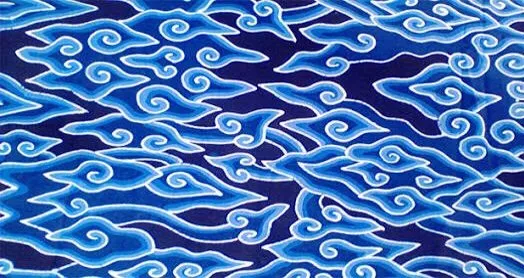

Batik pesisir adalah salah satu jenis batik yang memiliki ciri khas dan motif-motif tertentu yang berasal dari daerah pesisir di Indonesia. Batik pesisir seringkali mencerminkan kekayaan budaya, sejarah, dan kehidupan masyarakat pesisir yang kaya akan pengalaman maritim dan hubungan dengan laut. Ciri khas dari batik pesisir termasuk motif-motif yang terinspirasi dari kehidupan laut, seperti motif ikan, kapal, ombak, kerang, atau gambar-gambar yang menggambarkan kegiatan nelayan. Selain itu, warna yang digunakan dalam batik pesisir juga seringkali cerah dan mencerminkan nuansa laut, seperti biru, hijau, dan warna-warna terang lainnya.
Berikut adalah beberapa informasi tentang batik pesisir:
1. Motif-Motif Khas: Motif-motif dalam batik pesisir tidak hanya terkait dengan kehidupan laut, tetapi juga mencakup simbol-simbol seperti pemandangan pantai, flora dan fauna pesisir seperti kelapa, daun kelapa, atau hewan-hewan laut seperti lumba-lumba dan penyu.
2. Proses Pembuatan : Proses pembuatan batik pesisir melibatkan teknik pewarnaan dan penciptaan motif yang unik. Biasanya, proses ini melibatkan canting (alat untuk menerapkan lilin panas pada kain) dan celupan warna secara bertahap untuk menciptakan motif yang kompleks dan indah.
3. Peran Budaya : Batik pesisir tidak hanya menjadi pakaian atau karya seni, tetapi juga memiliki nilai-nilai budaya yang mendalam. Pakaian batik pesisir sering kali dipakai dalam upacara adat, pernikahan, atau acara penting lainnya sebagai simbol kekayaan budaya dan keindahan motifnya.
4. Variasi Lokal : Setiap daerah pesisir memiliki gaya batiknya sendiri dengan ciri khas yang unik. Misalnya, batik dari Jawa Timur dapat memiliki perbedaan dalam motif dan warna dengan batik yang berasal dari Jawa Barat atau daerah lainnya.
5. Pengakuan Sebagai Warisan Budaya Dunia : Keindahan, keunikan, dan nilai budaya dari batik pesisir, bersama dengan batik Indonesia secara keseluruhan, diakui oleh UNESCO sebagai Warisan Budaya Tak Benda Manusia. Pengakuan ini menegaskan pentingnya batik dalam warisan budaya global.
Batik pesisir tidak hanya menjadi lambang keindahan seni rupa Indonesia, tetapi juga mencerminkan kehidupan, nilai-nilai, dan identitas budaya masyarakat pesisir yang kaya akan warisan laut dan kehidupan pantai.